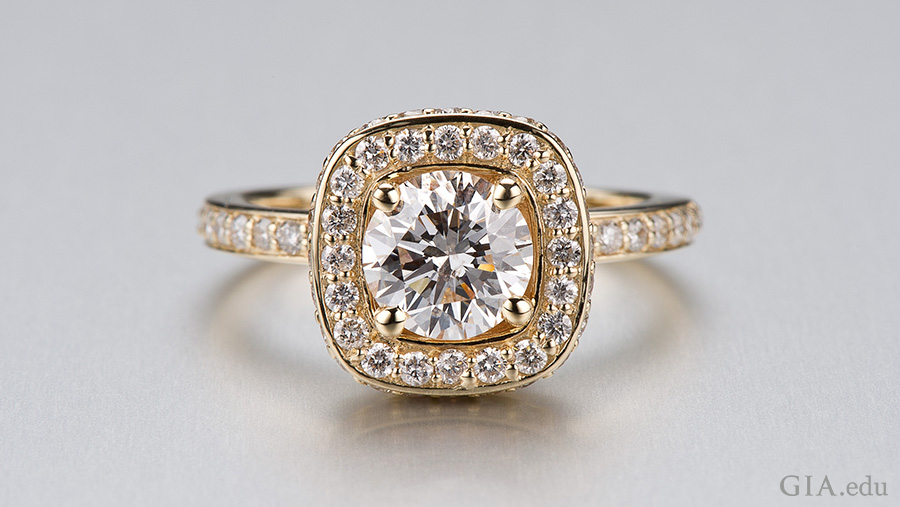
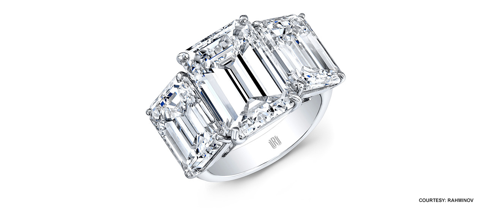

Diamonds were coveted by Indian royalty and the wealthy as early as the fourth century BCE. Later, caravans brought Indian diamonds and other exotic items to Venice. Diamonds became fashionable accessories for Europe’s elite by the 1400s.
In the early 1700s, India’s diamond supplies began to decline. Brazil then dominated the diamond market for more than 150 years.
Entrepreneur Cecil Rhodes established De Beers Consolidated Mines in 1888 and by 1900 it had control of 90 percent of the world’s production of rough diamonds.

South Africa and other African nations were major producers of rough diamonds. The Democratic Republic of the Congo and Botswana are included. Russia is one of the top producers by both volume and value, and its first major mine opened in 1960.The opening of the Argyle mine in Australia in 1983 and the discovery of diamond deposits in northern Canada in the 1990s expanded diamond mining.
Diamond is usually durable enough to be placed in an Ultrasonic cleaner. If you have a diamond that has been treated, it is best to clean it with a lint-free cloth, warm water, mild soap, and a soft toothbrush.